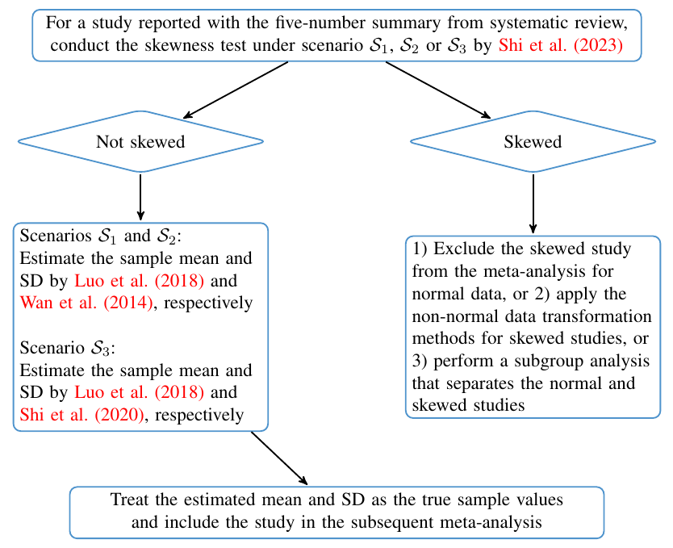

Estimating the sample mean and standard deviation (SD) from the five-number summary and its application in meta-analysis
-- by Tiejun Tong
Scenario 1
Scenario 2
Scenario 3
References:
J. Shi, D. Luo, X. Wan, Y. Liu, J. Liu, Z. Bian and T. Tong (2023), "Detecting the skewness of data from the five-number summary and its application in meta-analysis", Statistical Methods in Medical Research, 32: 1338-1360.
J. Shi, D. Luo, H. Weng, X. Zeng, L. Lin, H. Chu and T. Tong (2020), "Optimally estimating the sample standard deviation from the five-number summary", Research Synthesis Methods, 11: 641-654.
D. Luo, X. Wan, J. Liu and T. Tong (2018), "Optimally estimating the sample mean from the sample size, median, mid-range and/or mid-quartile range", Statistical Methods in Medical Research, 27: 1785-1805.
X. Wan, W. Wang, J. Liu and T. Tong (2014), "Estimating the sample mean and standard deviation from the sample size, median, range and/or interquartile range", BMC Medical Research Methodology, 14: 135.
A flow chart for performing meta-analysis when some studies are reported with the whole or part of the five-number summary
